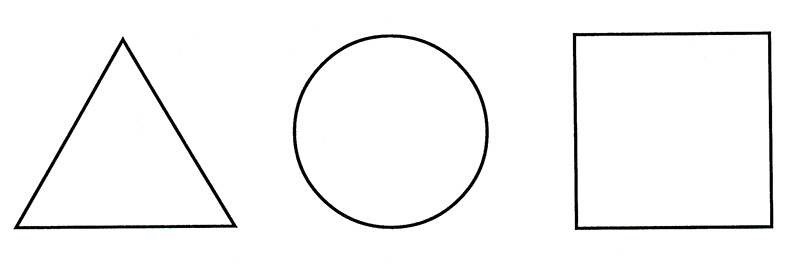

Figurae geometricae
Geometria ut scientia systematica in Graecia antiqua apparuit, eius constructiones axiomaticae in Euclidis Elementis descriptae sunt. Geometria Euclidea versatus est in studio simplicissimarum figurarum in plano et in spatio, calculi area et volumine. Coordinata methodus a Cartesio proposita anno 1637 fundamentum geometricae analyticae et differentialis formavit, et problemata cum ducendo ad geometriam describendam et projectivam creationem duxerunt. Eodem tempore omnes constructiones manserunt intra compagem accessionis axiomatis Euclidis. Mutationes fundamentales cum opere Lobachevsky anno MDCCCXXIX sociatae sunt, qui axioma parallelismi reliquerunt et novam geometriam non-Euclideanam creavit, ita viam ad ulteriorem progressionem scientiae et novas theorias creationem determinans.
Classificatio geometriae, quae a Klein in "Erlangen programmatis" 1872 proposita est, atque in suo fundamento invariatum rerum geometricarum respectu variarum conversionum, adhuc conservatur.
Geometria est de mutua corporum ordinatione, quae exprimitur in tangendo vel inhaerendo, situm inter, intra, et cetera; magnitudo corporum, id est, conceptus aequalitatis corporum magis vel minus; tum corporum transformationes. Corpus geometricum est abstractio ab Euclide, qui credidit "lineam esse longitudinem sine latitudine", "superficies est longitudo et latitudo". Punctus est abstractio cum omni corporis dimensione infinita reductione, vel limite divisionis infinitae. Locus, amplitudo et transformatio figurarum geometricarum determinantur relationibus localibus.
Geometria explorans objecta realia solum formam et situm relativum, abstrahens ab aliis proprietatibus obiectorum, ut densitatem, pondus, colorem. Hoc facit, ut ex spatiis relationibus inter res reales, ad quascumque relationes et formas orientium, consideret homogenea et similes spatiis, movere potest. Peculiariter geometria permittit nos videre distantias inter functiones .
